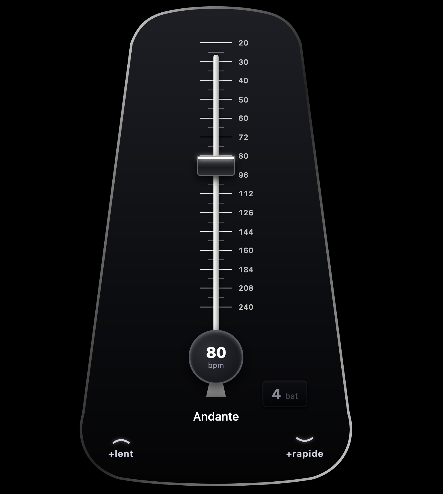
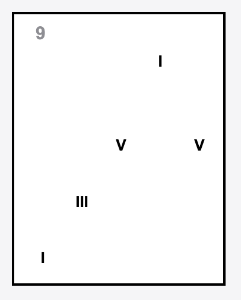
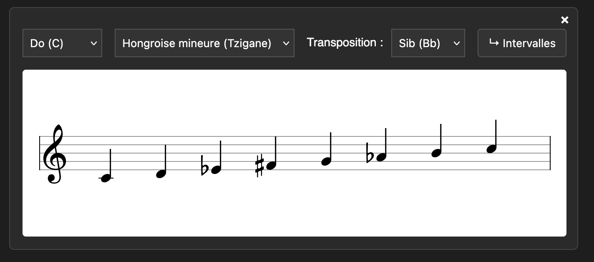

Metronome
Le temps découpé en tranches fines.
OuvrirDes applications pour explorer le rythme, les gammes, les modes et l’harmonie.

Le temps découpé en tranches fines.
Ouvrir
Une cartographie de degrés et de notes à chanter.
Ouvrir
Voir et entendre les gammes et les modes.
Ouvrir
Savoir quelle gamme utiliser avec un accord.
Ouvrir